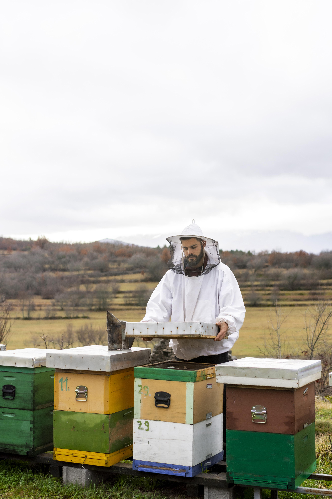
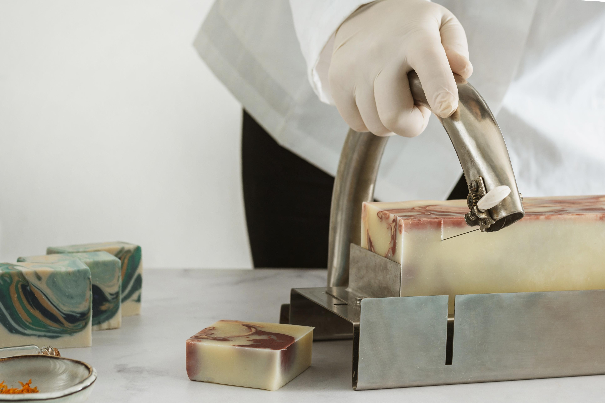

L'aventure d'une passion pour les abeilles, le miel et les produits naturels

« Tout a commencé de ma passion pour les abeilles, le miel et les produits naturels. C'est en alliant ces 3 convictions qu'en 2022 je me suis lancée dans la création d'une entreprise à mon image. »
Simple, à partir de produits naturels, de qualité, avec un engagement clair envers le client : une transparence totale sur la provenance des produits et le respect de l'environnement.
Nos savons artisanaux découlent de cette même ligne conductrice, uniquement faits de produits locaux tout en chérissant nos meilleures alliées, nos amies les abeilles.
Création de Mon Pote au Miel le 1er avril 2022. Installation des premières ruches au 12 chemin des Lavandes. L'aventure commence avec une poignée de ruches et une passion immense.

Lancement de notre gamme de savons à base de miel. Saponification à froid, ingrédients 100% locaux. Le succès est immédiat auprès des clients fidèles de la boutique.

Ouverture des ventes à l'international : Japon, USA, Maroc, Argentine. Notre équipe grandit pour répondre à la demande croissante, tout en gardant notre philosophie artisanale.

De la ruche à votre table, chaque étape est réalisée avec soin et transparence.
Nos abeilles butinent librement dans les champs de lavande et les forêts locales. Le miel est extrait à froid pour préserver toutes ses qualités.
Nos savons sont fabriqués par saponification à froid, un processus artisanal qui conserve la glycérine naturelle et les bienfaits du miel.
Chaque produit est emballé dans des matériaux recyclables et compostables. Zéro plastique, 100% respect de notre planète.
47 collaborateurs passionnés qui partagent la même vision : qualité, nature et transparence.
Apiculteur & Fondateur

Maître artisan savonnier

Équipiers polyvalents
Production & Logistique